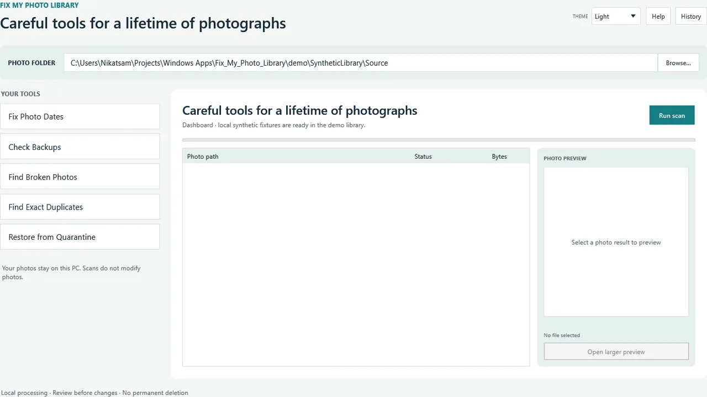
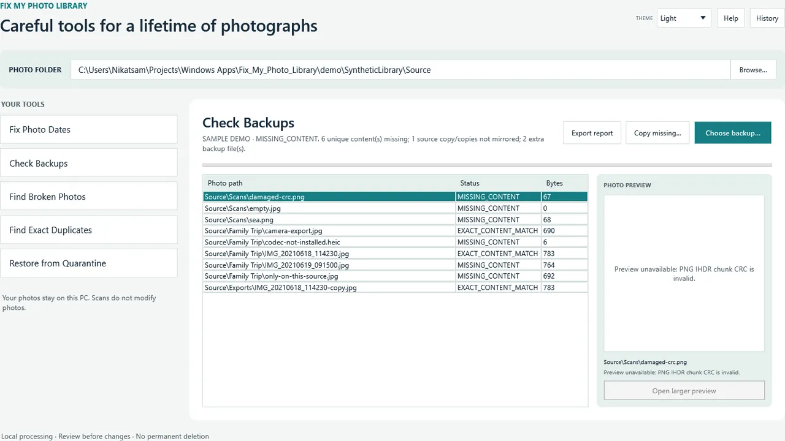
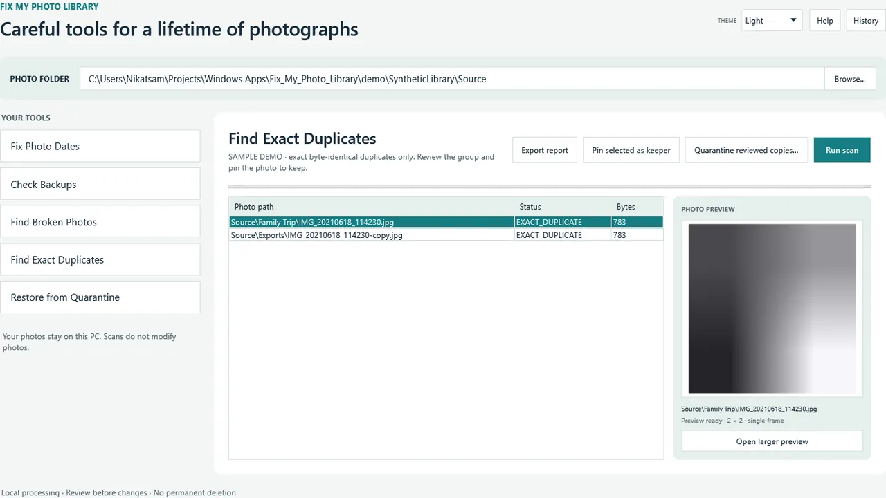
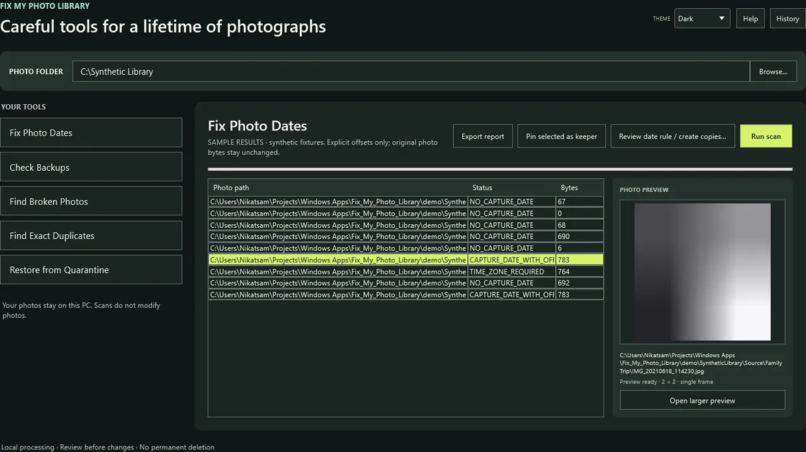
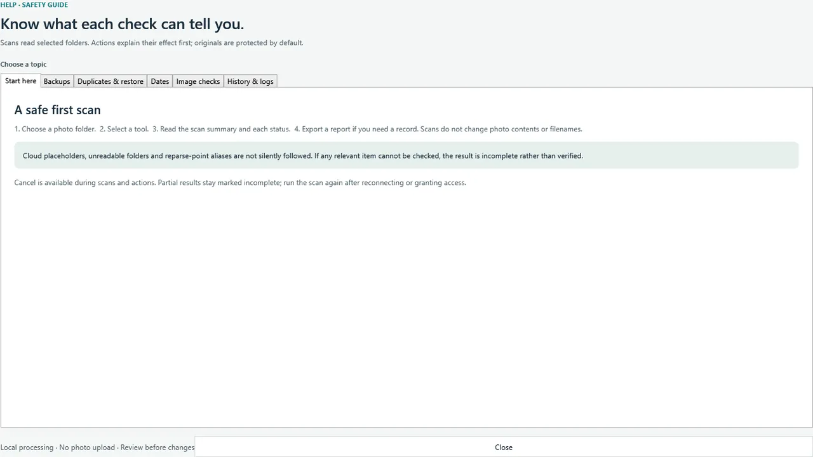
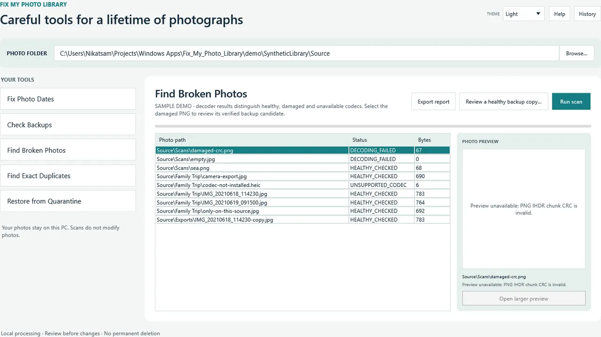
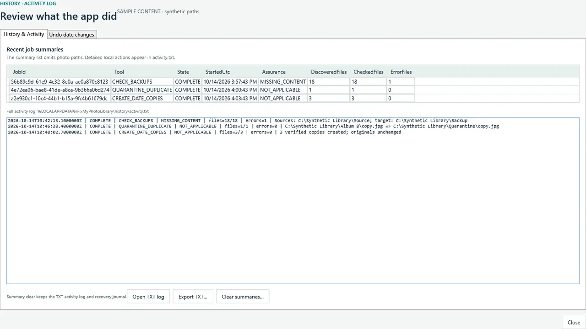
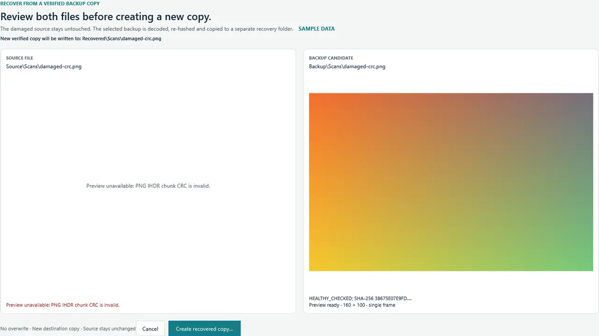
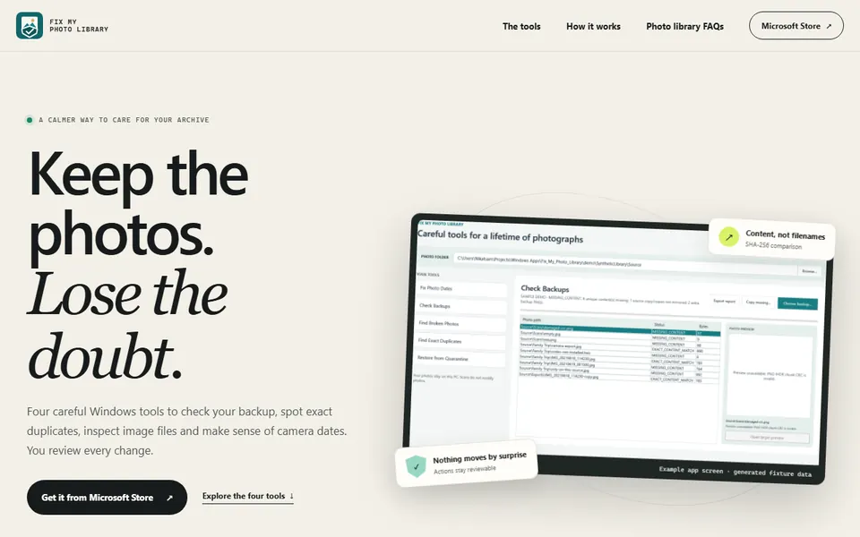

Application Windows · En ligne
Fix My Photo Library
Compare les sauvegardes par contenu, pour que les copies renommées restent reconnues. Supprime les doublons exacts avec possibilité d'annulation, signale les images endommagées et contrôle les informations de date de l'appareil photo. Les modifications sont réversibles et rien n'est envoyé.
À qui s'adresse-t-elle : Pour qui a une bibliothèque de photos encombrée de doublons et veut la nettoyer en toute sécurité.
Ce qu'elle fait
- Vérifie les sauvegardes en comparant le contenu, pour que les copies renommées restent identifiées
- Repère les fichiers identiques et déplace les surplus dans une quarantaine réversible
- Analyse les images pour détecter les erreurs de décodage, en séparant les vrais dommages des formats non pris en charge
- Contrôle la date de l'appareil et le fuseau horaire avant de modifier les horodatages des fichiers
- Restaure une photo endommagée depuis une copie saine, sous forme de copie séparée et vérifiée
Ce qu'elle ne fait pas
- Réécrire les métadonnées EXIF ni deviner les fuseaux horaires manquants
- Réparer les données de pixels endommagées
- Envoyer vos photos ailleurs pour les traiter
Captures d'écran








